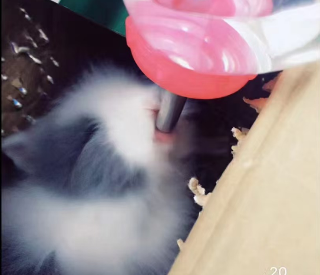

| Year | Milestone |
|---|---|
| 2017 | You came into my life |
| 2018 | Your first photo shoot |
| 2019 | Venturing into society together |
| 2020 | Companion during the pandemic |
| 2021 | First composite photo created |
| 2022 | Played the role of Chang'e |
I remember the first time you arrived, a tiny bundle curiously looking around your new surroundings. You were gentle and shy, and at that moment, I knew you'd be an important part of my life.
Taking you outside for the first time, you hid nervously behind me, but slowly you started exploring. The sunlight was beautiful that day, and your little eyes were filled with curiosity.
To capture your growth, I decided to give you a photoshoot. You looked at the camera calmly, becoming a little star in my heart.
Here are some of your everyday habits:
As I grew my hair long, you jumped up on the couch, curious about this new change. Your playful nature shone as you explored every inch of the sofa, making it your playground.
We began venturing out more, visiting parks and meeting new friends. You were so social, hopping around and spreading joy wherever we went.
During the pandemic, you became my constant companion while I worked from home. Your presence made those long days much brighter, reminding me to take breaks and enjoy the little moments.
To prevent any accidents, I reluctantly put you in a diaper. It was a challenge at first, but you quickly adjusted and looked quite adorable!
We created our first composite photo together, capturing all the wonderful moments we shared. It truly represented our bond and the love we have for each other.
It was amazing to discover your long-lost brother! Though you had different fathers, the connection was undeniable, and you both enjoyed playing together.
It seemed that you felt nervous when I hug you. However, I liked pushing you to do that.
Thanks to you, I had the honor of playing the role of Chang'e during a cultural event. You brought joy to the celebration, and it was a memory I will cherish forever.
If you'd like to learn about bunny care, please visit Bunny Care Guide.